Group Assignment
Group Assignment¶
-
Test the design rules for your 3D printer(s)
-
Document your work and explain what are the limits of your printer(s) (in a group or individually).
3D Printing¶
3D printing is a process of fabricating a three dimensional objects through a 3D digital model created in a Computer-Aided Design software (CAD). The process consists of the arrangement of successive layers to create the object and each layer can be seen as a thinly sliced cross-section of the object.
3D Printer - Ultimaker 2+¶
The Insper Fab Lab is equipped with two models of 3D printers, the Ultimaker 2+ and a Zmorph 2.0 SX. For this group assignment we used the Ultimaker printer to test the design rules and document its limits.
Here are the equipment specifications:
- Print technology: Fused Deposition Modeling (FDM)
- Build volume : 230 x 225 x 205mm
- Filament diameter: 2.85 mm
- Nozzle diameter: 0.4mm
- Print speed: 30 mm/s - 300 mm/s
- Supported Filaments: PLA and ABS.
- Overall Size: 357 x 342 x 388mm
- File Transfer: Standard SD card
- Printing Software: Cura
Preparing for printing in the Cura¶
To fulfill the requirements of this assignment, I used the 3D Printer Test Models created by Make Magazine. It is possible to download the files here.
The test models avaiables in those files are:
- Dimensional Accuracy
- Bridging Performance
- Overhang Performance
- Negative Space Tolerance
- Fine Positive Features Performance
- XY Resonance
- Z Resonance
I imported the files into Cura, a software developed by Ultimaker where is possible to set up the printing configurations and parameters.
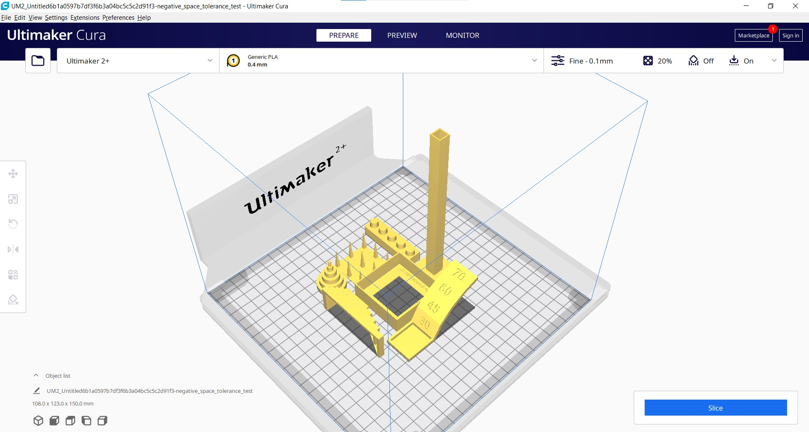
I set up the printing for PLA material and with the following parameters:
- Layer Height: 0.15mm
- Wall Line Count: 4
- Top Layers: 6
- Bottom Layers: 6
- Infill Density: 15%
- Infill Pattern: Grid
- Print Speed: 45mm/s
- Build Plate Adhesion Type: Raft
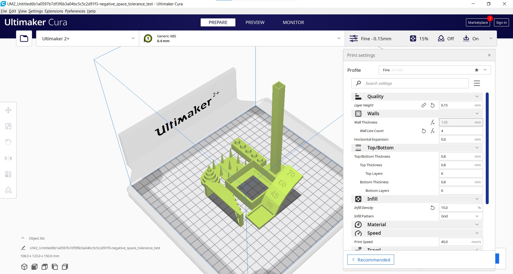
Here is a preview from Cura of the printing showing that it going to take almost 10 hours of printing.
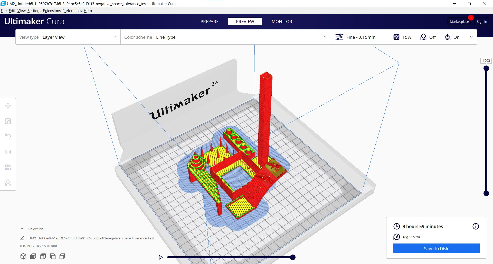
I exported a .gcode file to a SD Card and pluged in it into the printer.
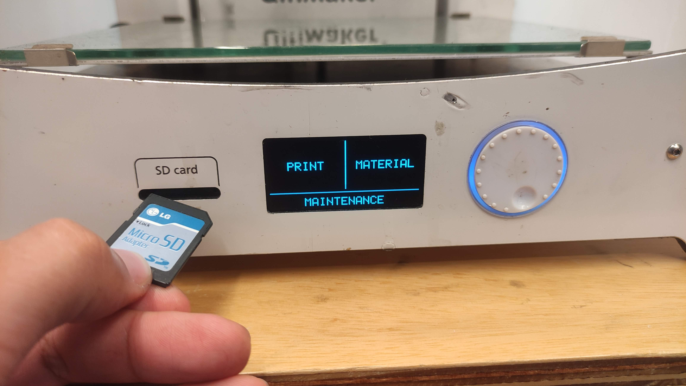
From the main menu I selected the "print" option followed by the selection of the .gcode file.
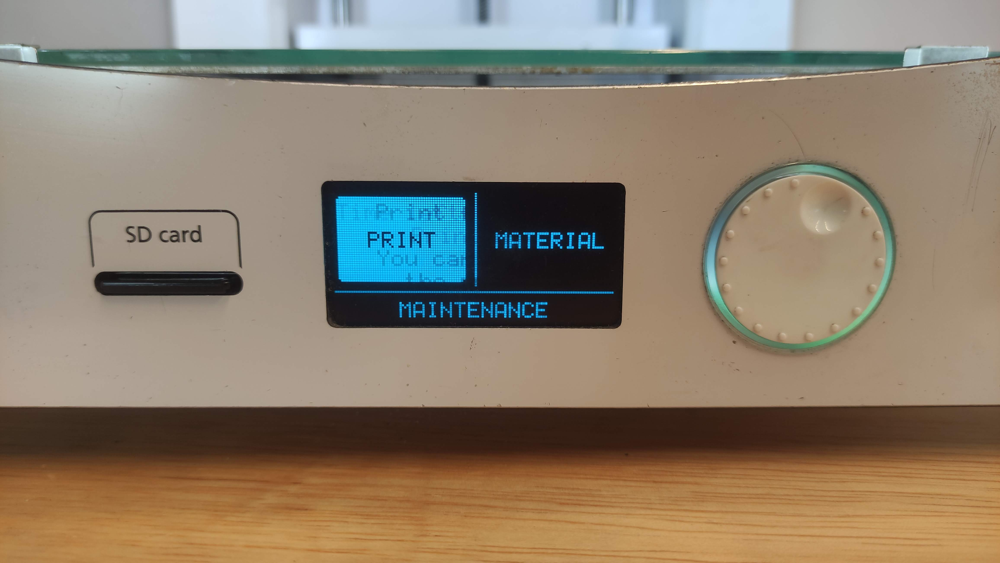
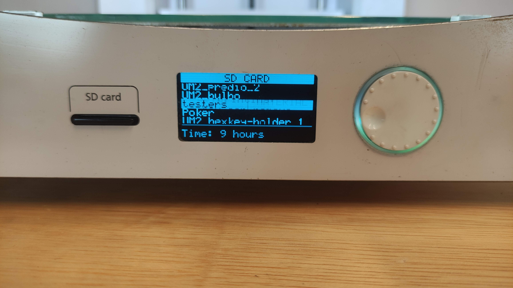
The buildplate and the hotend will start to heat up until 60°C and 200°C respectively (temperatures set up for PLA material) and as soon the temperature is reached, the printing process will start.
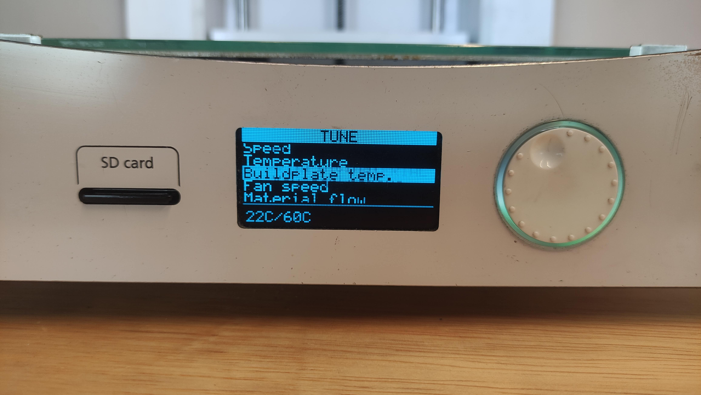
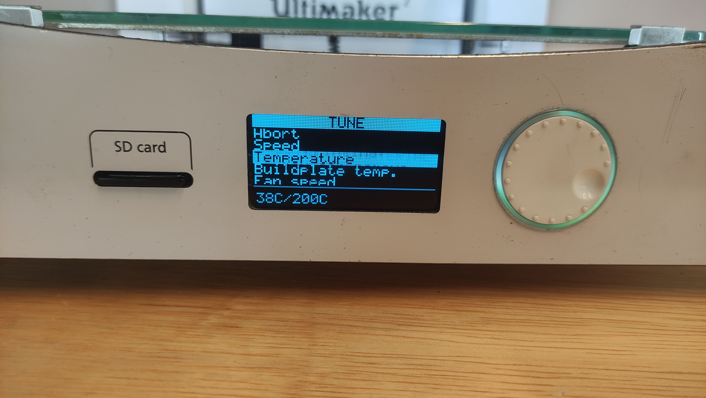
By the end of the process, I got the following result:
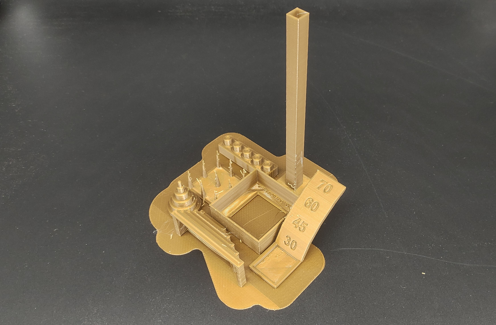
Unfortunately, I notice that some shapes from this print did not came up as I expected. On the the dimension accuracy model and the negative space tolerance model the cylinders did not came out rounded but with an elliptical shape. This happened cause the axis and belts from the printer were not aligned and tied enough. Then I needed to adjust them and repeat the printing process. After disassembling, cleaning, aligning and assembling the printer again, I printed the testers one more time and got a better result.
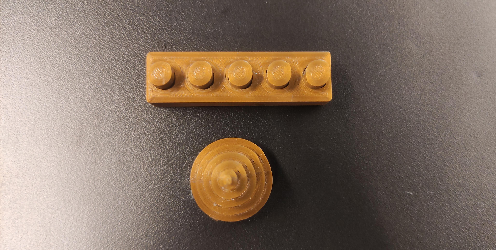
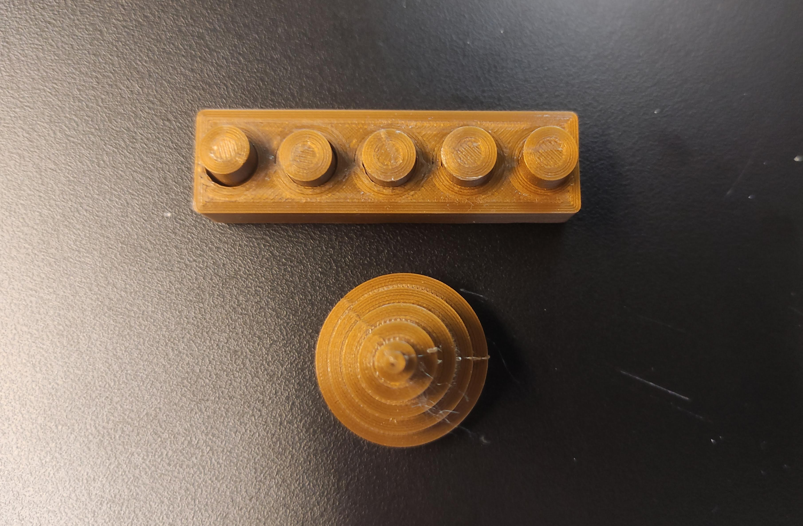
With that issue fixed, I could evaluate the testers that were printed.
Dimensional Accuracy¶
The Dimensional Accuracy test came out as expected. After fixing the alignment issue that resulted in a elliptical body, the second printed tester came out rounded as planned and with the dimensions according to the digital model.
Here it is the dimensions of the digital model:
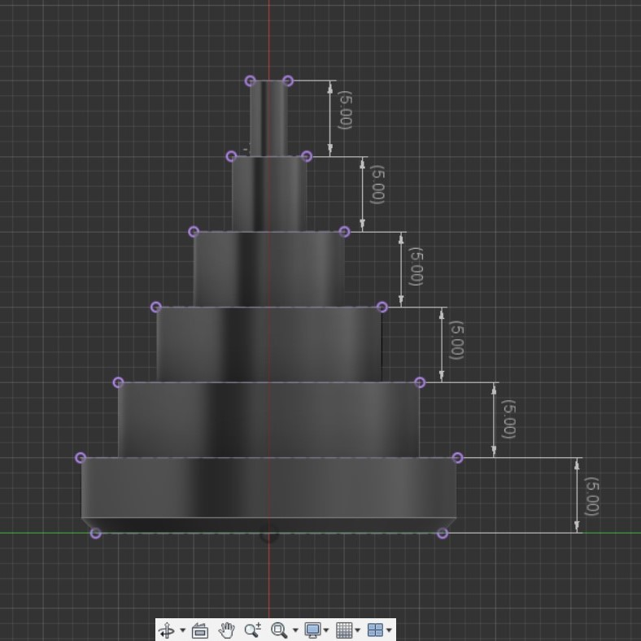
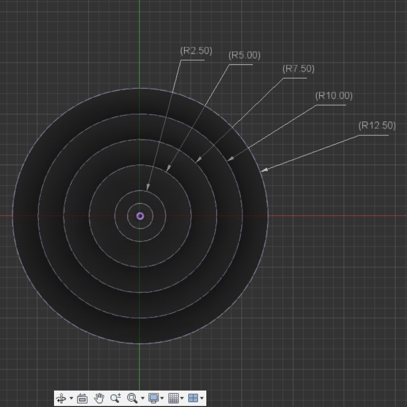
Here it is the dimensions of the printed part:
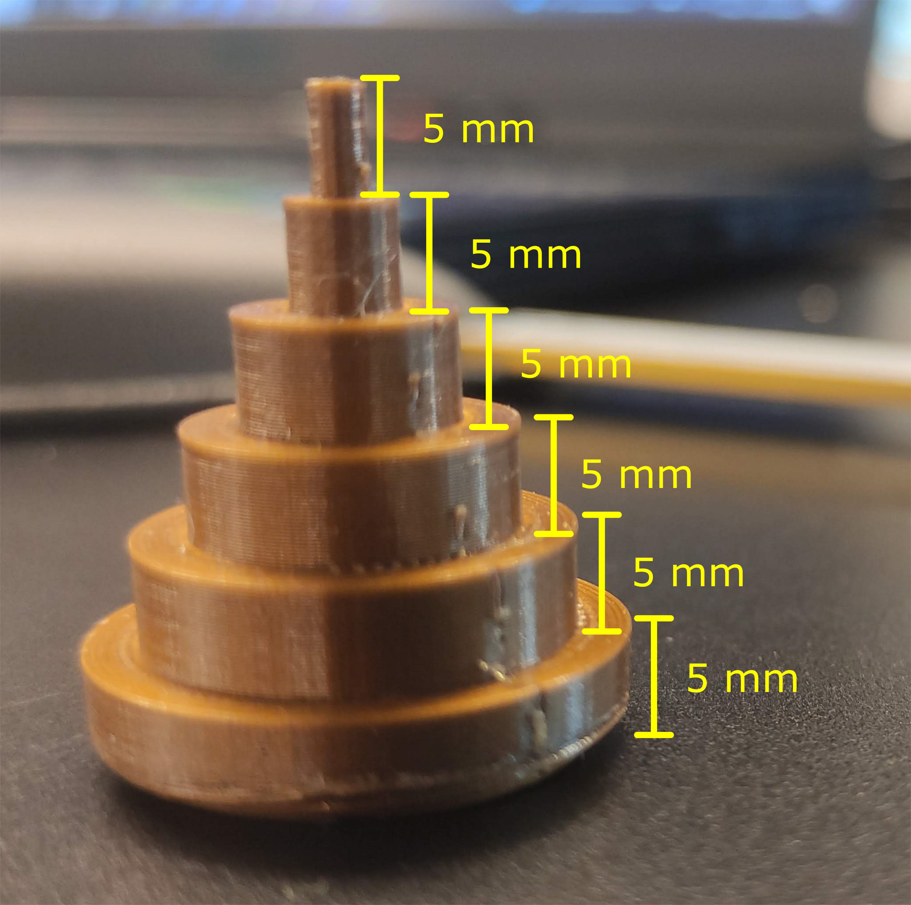
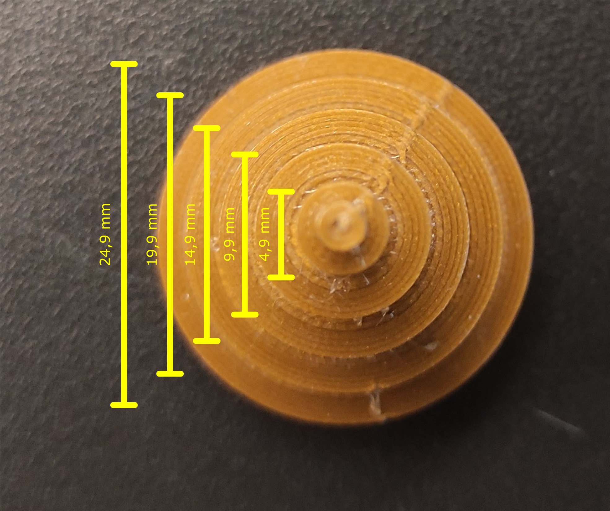
Bridging Performance¶
The Bridging Test also presented good results. The bridges were formed in all levels, but got a better finishing with the first and second one. I would recommend brigdings considering those distances.
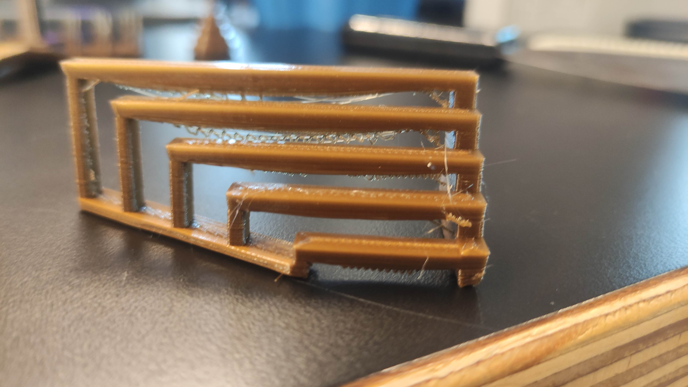